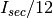

scalspd – Scale Speed Calculator¶
This is a relatively simple Table that produces an output from a few inputs. This could be a full Solver, but it isn’t.
Legacy Output¶
SCALE SPEED by George Murphy VE3ERP
This program calculates the scale speed of a scale model travelling over a
full scale distance in real time.
Press <1> to run program or <0> to EXIT.
ENTER: scale of model...... 1:? 87
Scale of model.......... 1 : 87
ENTER: Full scale distance in inches? 14
Full scale distance..... 14.0 inches
= 1218.0 scale inches
ENTER: Travel time in seconds? 18
Travel time............= 18.0 seconds
Scale speed............= 67.7 scale inches per second
= 5.6 scale feet per second
= 338.3 scale feet per minute
= 20300 scale feet per hour
= 3.8 scale miles per hour
Analyis¶
This requires three inputs, Scale, Full-Scale Distance and Travel Time.
This uses “full scale” in a way that seems inappropriate. For example “ENTER: Full scale distance in inches” shouldn’t really be “Full Scale”, but should perhaps be “actual” or “non-scaled”.
The various calculations are all based on computed scale distance, not actual distance.
Given scale, F, actual distance, R, and time, T, the various calculations are:
| D: | Scale inches is . |
|---|---|
| I_sec: | Scale speed (inch/sec) is . |
| F_sec: | Feet per second is . |
| F_min: | Feet per minute is |
| F_hr: | Feet per hour is |
| M_hr: | Miles per hour is . |
Implementation¶
This doesn’t require a calculation module. This is simply input and output using a template.